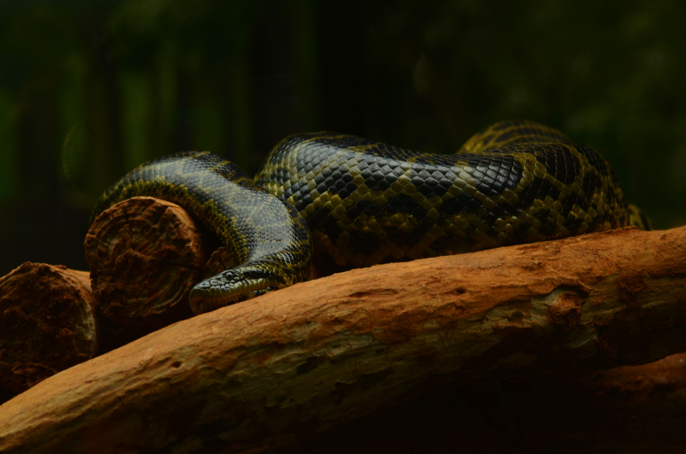
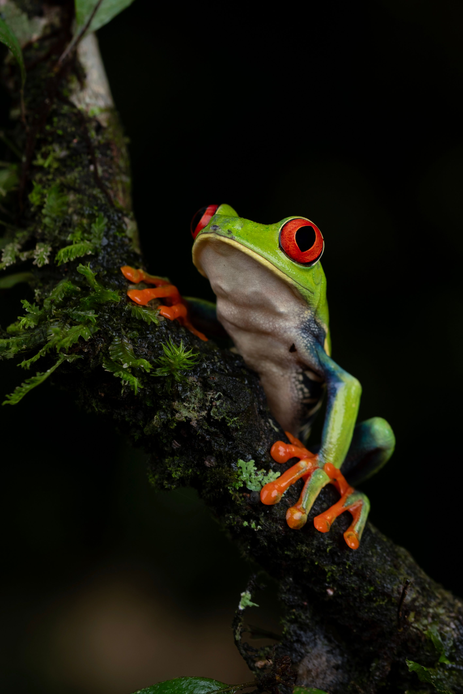
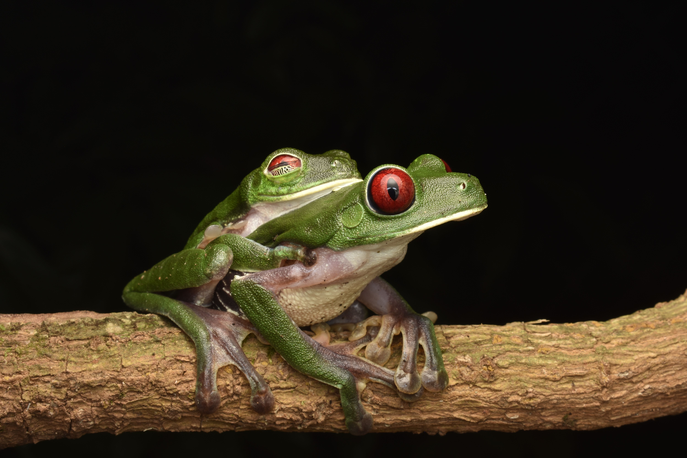
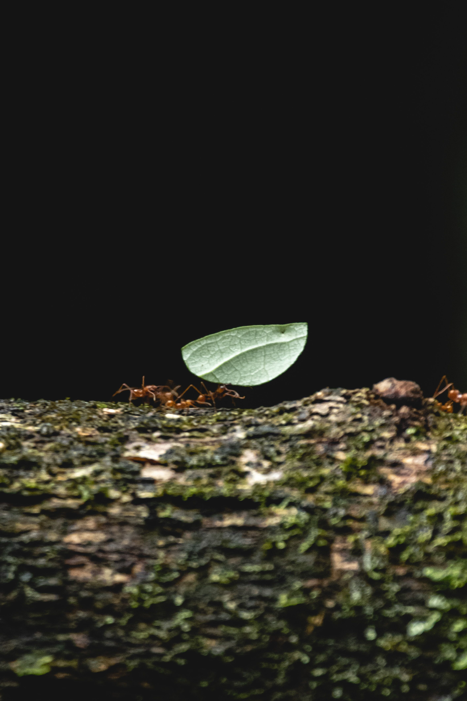
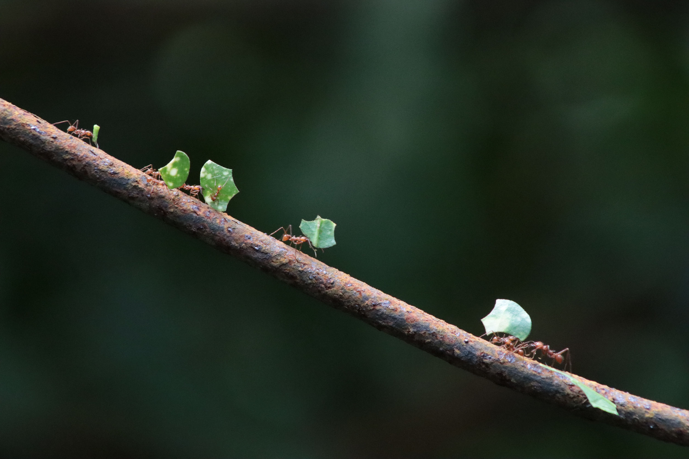
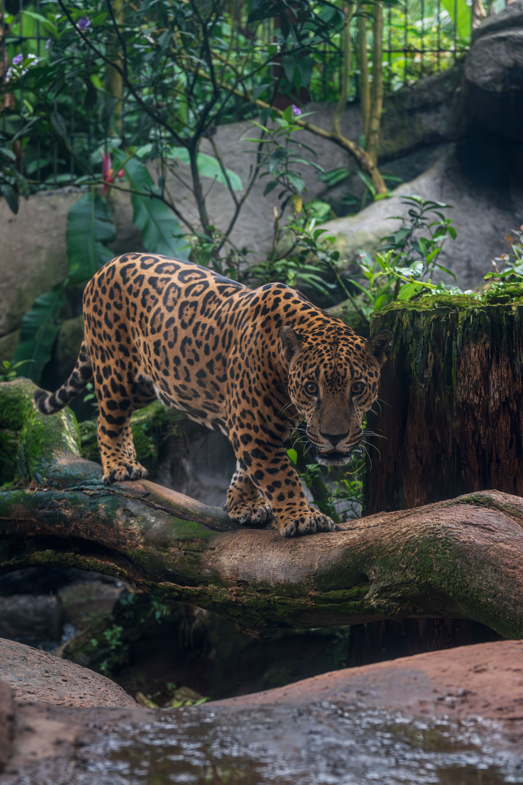
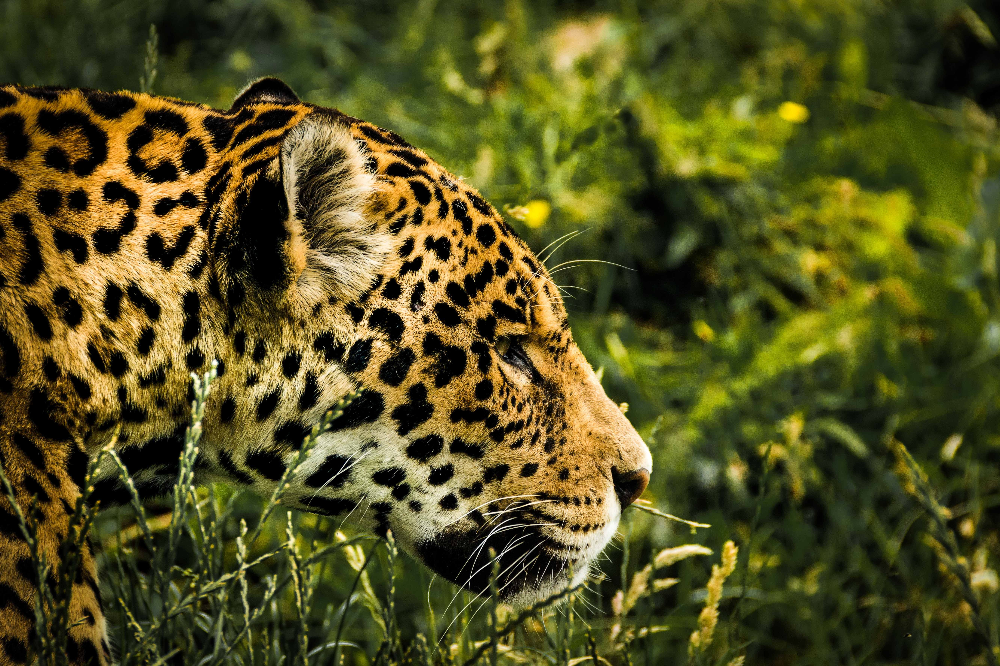
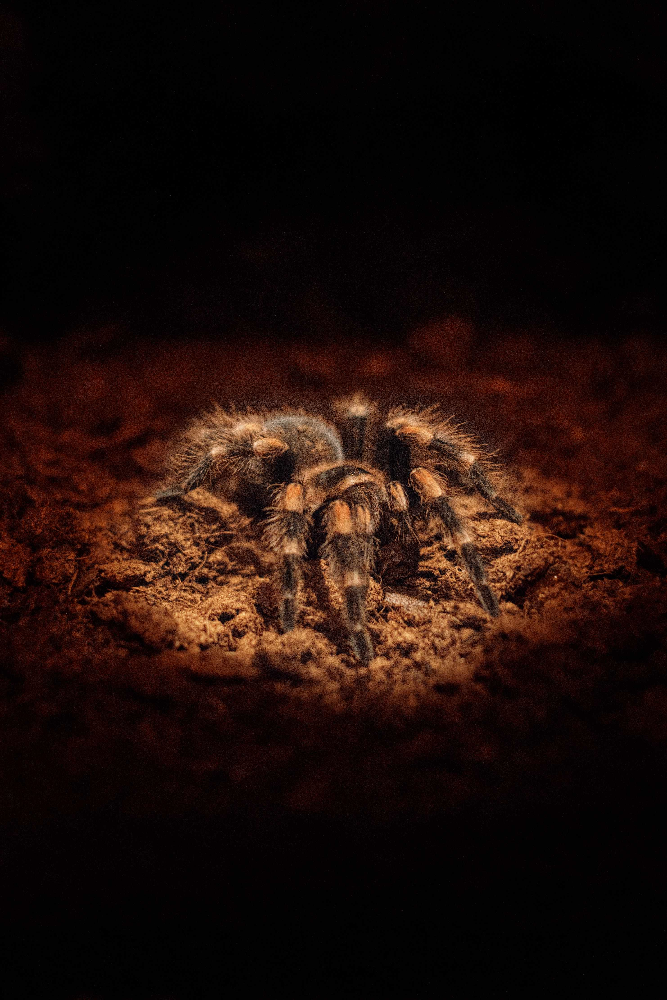

Allatok az esőerdőben


Anakonda
- A világ legnehezebb kígyója: A nagy nőstények 5-6 méteresek is lehetnek, és a súlyuk akár 100 kg fölé nő.
- Hím vs Nőstény: A nőstények sokkal nagyobbak a hímeknél, a hímek jóval kisebbek és könnyebbek.
- Szeret vízben élni: A szeme és az orrlyukai a feje tetején vannak, így úgy tud lesben állni, hogy szinte az egész teste víz alatt marad.
- Vadászat: Nem mérges, a zsákmányát (pl. kapibarát vagy kaimánt) szorítással fojtja meg.
- Elevenszülő: Nem tojásokat rak, hanem élő kölykök születnek, egyszerre akár 20-40 is.


Béka
- Az aranyszínű levélmászó béka az egyik legmérgezőbb állat a Földön: a mérge akár több ember megölésére is elég lehet.
- Táplálék: A békák a mérgüket nem maguk termelik, hanem a táplálékukból (hangyákból, atkákból) szerzik, ezért fogságban nem mérgezőek.
- Az élénk színük figyelmeztetés a ragadozóknak: “ne egyél meg, mérgező vagyok”.
- Szülők: A nőstények a hátukon cipelik az ebihalakat a fák lombjában lévő kis vízgyűjtőkhöz (pl. bromélia levelekhez).
- Érdekesség: Az üvegbéka hasa átlátszó, ezért a szíve és a belső szervei kívülről láthatók.


Hangya
- Táplálék: A levélvágó hangyák a levéldarabokat nem megeszik, hanem gombát termesztenek rajtuk, és azt eszik.
- Erő: Képesek a saját testsúlyuk sokszorosát cipelni.
- Csapatmunka: A vándorhangyák (katonahangyák) nem építenek állandó fészket, a saját testükből építenek élő hidat és ideiglenes tábort.
- Csípés: A golyóhangya csípése a rovarcsípések közül az egyik legfájdalmasabb, a fájdalom akár egy napig is eltarthat.
- Érdekesség: Bizonyos hangyafajokat egy parazita gomba (Ophiocordyceps) megfertőz és “irányít”, ezért szokták zombihangyának hívni őket.


Jaguár
- Méret: Amerika legnagyobb macskaféléje, és a világon a harmadik legnagyobb (az oroszlán és a tigris után).
- Harapás: A testméretéhez képest az egyik legerősebb harapású nagymacska, még a teknősök páncélját is képes átharapni.
- Táplálék: Kiválóan úszik, szeret vízben vadászni, és halat meg kaimánt is zsákmányol.
- Színe: A fekete párduc valójában fekete színű jaguár (vagy leopárd), a sötét foltokat ilyenkor a nagyon sötét alapszín alig engedi látni.
- Érdekesség: Magányosan él, és nagy területet járőrözik be. A neve egy őslakos szóból ered, jelentése nagyjából: “aki egy ugrással öl”.


Tarantula
- Méret: A goliáth madárpók a világ legnehezebb pókja, a lábtávolsága akár 25-30 cm is lehet.
- Védekezés: Védekezéskor a hasáról csalánozó szőröket rúg a támadó felé, ezek viszketést és égést okoznak.
- Támadás: Nem hálóval fogja el a zsákmányát, hanem a talajon vagy a fákon vadászik, a hálóját inkább búvóhelyként használja.
- Élettartam: A nőstények akár 20-30 évig is élhetnek, ami a pókok között kiemelkedően hosszú.
- Érdekesség: A mérge emberre általában nem veszélyes, a hatása nagyjából egy méhcsípéshez hasonlít.